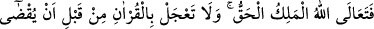
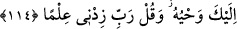

sûretine çevirme gibi tehdidler zikredilmiştir.” Nitekim et-Te’vîlatü’n-Necmiyye’de
şöyle der: “Senin kavmini geçmiş ümmetlere indirilen türlü cezalarla tehdîd ettik.
Onlara bunu tekrar tekrar bildirdik.”
Tefsîr-i Kebîr’de şöyle der: “Buradaki vaîde/tehdide, haramların ve helâllerin
açıklanması da dâhildir. Çünkü tehdid, bu ikisiyle ilgilidir.”
“Umulur ki onlar” bu sâyede inkârdan ve bilfiil günahlardan “korunurlar; yahut da
o (Kur’an) kendileri için bir ibret ortaya koyar.” Yâni Kur’an kendilerinden önce
helâk olanları hatırlatarak îkâz ve ibreti yeniler. Bu da âhiret konusunda sakınmaya
sebep olur.
Bir şeyin ihdâsı, onu var etmektir. Hudûs ise, araz olsun cevher olsun, olmayan bir
şeyin sonradan olmasıdır.
114. Gerçek hükümdar olan Allah, yücedir. Sana O’nun vahyi tamamlanmazdan
önce Kur’an’ı (okumakta) acele etme ve “Rabbim, benim ilmimi artır” de.
“Gerçek hükümdar olan Allah, yücedir.” Şerefli hiçbir mertebe yoktur ki Hak Teâlâ
onun en yüce ve yüksek derecesinde olmasın. Çünkü O, müessirdir, vâcibül’l-
vücûddur/varlığı zorunlu olandır. O’nun dışındaki her şey ise eserdir ve mümkindir.
Vâcib ile mümkin arasında benzerlik yoktur.
el-İrşâd’da şöyle der: “Teâlâ” ifâdesi, Allah Teâlâ’yı ve kulları üzerinde tasarrufta
bulunduğu işlerini yüceltme ifâdesidir. Bu işler ise O’nun emirleri ve yasakları, vaad ve
vaîdi ile benzeri diğerleridir. Yani O zâtı, sıfatları, fiilleri ve ahvâli ile yaratılmışlara
benzemekten münezzehtir.”
O, Melik’tir. Emirlerini ve yasaklarını infâz eden, vaadi umulmaya ve vaîdinden
sakınılmaya lâyık Sultan’dır. Mülk zâtına mahsus olmaya lâyık, melekûtunda ve
ulûhiyyetinde Hak/gerçek olandır.
“Sana O’nun vahyi” ilkâ edilmesi ve okunması “tamamlanmazdan” edâ edilmezden
ve bitirilmezden “önce Kur’an’ı (okumakta) acele etme.”
Rasûlullah (s.a.), Cebrâil (a.s.) kendisine vahyi ilkâ ettiğinde onu tam olarak
alabilmek ve ezberleyebilmek için hemen Cebrâil (a.s.)’ın peşinden harf harf, kelime
kelime tekrarlardı. Rasûlullah (s.a.) böyle davranmaktan men’edildi. Çünkü bu takdirde
bir kelimenin telâffuzu ile uğraşırken, ondan sonra okunanı işitememesi muhtemeldir.
Şu halde bu nehyin anlamı, ‘Cebrâil (a.s.) kırâatını tamamlayıp tebliğ ve telkînini
bitirmeden evvel unutma ve karıştırma korkusuyla Kur’an’ı okumakta acele etme. Tebliğ
ettiği vakit oku.’ demektir.
et-Te’vîlâtü’n-Necmiyye’de şöyle der: “Burada Kur’an’ın nurlarıyla nurlanmak ve